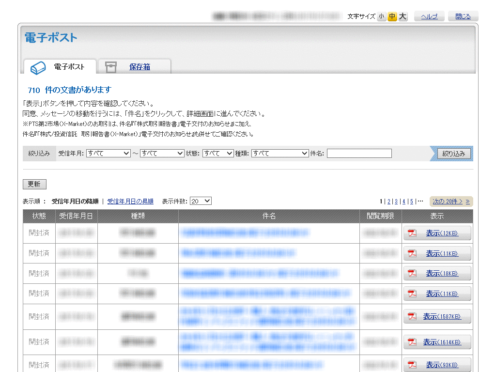

https://shingo45endo.github.io/postub_downloader/

This is a bookmarklet to download PDF files as a zip file for POSTUB system.
POSTUB is one of an electronic mailbox system for Japanese financial institutions. This system is used to send personal correspondences regarding trading reports. However, it doesn’t have “bulk download” feature even though there are many reports which should be downloaded.
This bookmarklet can download all the PDF files on the current page as a zip file.
POSTUB(電子信書交付サービス)からPDFファイルをまとめてzipファイルとしてダウンロードするブックマークレットです。
POSTUBは日本のいくつかの金融機関で使われている電子信書交付サービスで、取引や運用についての報告書を電子交付するために使われています。しかし、大量の報告書が交付されるにもかかわらず「まとめてダウンロード」のような機能がなく一つ一つダウンロードするしかないため非常に不便です。
このブックマークレットを使うことで、現在のページ上のすべてのPDFファイルをzipファイルとしてダウンロードできます。
POSTUB PDF Downloader Bookmarklet
MIT